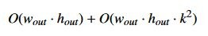

Vitis™Hardware Acceleration Introduction TutorialSee Vitis™ Development Environment on xilinx.com |
Overview¶
We looked at a straightforward bilateral resize algorithm in the last example. While we saw that it wasn’t an amazing candidate for acceleration, perhaps you might want to simultaneously convert a buffer to a number of different resolutions (say for different machine learning algorithms). Or, you might just want to offload it to save CPU availability for other processing during a frame window.
But, let’s explore the real beauty of FPGAs: streaming. Remember that going back and forth to memory is expensive, so instead of doing that let’s just send each pixel of the image along to another image processing pipeline stage without having to go back to memory by simply streaming from one operation to the next.
In this case, we want to amend our earlier sequence of events to add in a Gaussian Filter. This is a very common pipeline stage to remove noise in an image before an operation such as edge detection, corner detection, etc. We may even intend to add in some 2D filtering afterwards, or some other algorithm.
So, modifying our workflow from before, we now have:
Read the pixels of the image from memory.
If necessary, convert them to the proper format. In our case we’ll be looking at the default format used by the OpenCV library, BGR. But in a real system where you’d be receiving data from various streams, cameras, etc. you’d have to deal with formatting, either in software or in the accelerator (where it’s basically a “free” operation, as we’ll see in the next example).
For color images, extract each channel.
Use a bilateral resizing algorithm on each independent channel.
Perform a Gaussian blur on each channel.
Recombine the channels and store back in memory.
So, we now have two “big” algorithms: bilateral resize and Gaussian blur. For a resized image of wout × hout,
and a square gaussian window of width k, our computation time for the entire pipeline would be roughly:

For fun, let’s make k relatively large without going overboard: we’ll choose a 7 × 7 window.
Key Code¶
For this algorithm we’ll continue to use of the Vitis Visionlibraries.
As before, we’ll configure the library (in the hardware, via templates in our hardware source files) to process eight pixels per clock cycle. Functionally, our hardware algorithm is now equivalent to this in standard software OpenCV:
cv::resize(image, resize_ocv, cv::Size(out_width, out_height), 0, 0, CV_INTER_LINEAR);
cv::GaussianBlur(resize_ocv, result_ocv, cv::Size(7, 7), 3.0f, 3.0f, cv::BORDER_CONSTANT);
We’re resizing as in Example 7, and as we mentioned are applying a 7 × 7 window to the Gaussian blur function. We have also (arbitrarily) selected σx = σy =3.0
Running the Application¶
With the XRT initialized, run the application by running the following command from the build directory:
./08_opencv_resize alveo_examples <path_to_image>
Because of the way we’ve configured the hardware in this example, your image must conform to certain requirements. Because we’re processing eight pixels per clock, your input width must be a multiple of eight.
If it isn’t then the program will output an error message informing you which condition was not satisfied. This is of course not a fundamental requirement of the library; we can process images of any resolution and other numbers of pixels per clock. But, for optimal performance if you can ensure the input image meets certain requirements you can process it significantly faster. In addition to the resized images from both the hardware and software OpenCV implementations, the program will output messages similar to this:
-- Example 8: OpenCV Image Resize and Blur --
OpenCV conversion done! Image resized 1920x1080 to 640x360 and blurred 7x7!
Starting Xilinx OpenCL implementation...
Matrix has 3 channels
Found Platform
Platform Name: Xilinx
XCLBIN File Name: alveo_examples
INFO: Importing ./alveo_examples.xclbin
Loading: ’./alveo_examples.xclbin’
OpenCV resize operation: 7.170 ms
OpenCL initialization: 275.349 ms
OCL input buffer initialization: 4.347 ms
OCL output buffer initialization: 0.131 ms
FPGA Kernel resize operation: 4.788 ms
In the previous example the CPU and the FPGA were pretty much tied for the small example. But while we’ve added a significant processing time for the CPU functions, the FPGA runtime hasn’t increased much at all!
Let’s now double the input size, going from a 1080p image to a 4k image. Change the code for this example, as we did with Example 7 and recompile.
Running the example again, we see something very interesting:
-- Example 8: OpenCV Image Resize and Blur --
OpenCV conversion done! Image resized 1920x1080 to 3840x2160 and blurred 7x7!
Starting Xilinx OpenCL implementation...
Matrix has 3 channels
Found Platform
Platform Name: Xilinx
XCLBIN File Name: alveo_examples
INFO: Importing ./alveo_examples.xclbin
Loading: ’./alveo_examples.xclbin’
OpenCV resize operation: 102.977 ms
OpenCL initialization: 250.000 ms
OCL input buffer initialization: 3.473 ms
OCL output buffer initialization: 7.827 ms
FPGA Kernel resize operation: 7.069 ms
What wizardry is this!? The CPU runtime has increased by nearly 10x, but the FPGA runtime has barely moved at all!
Like we said, FPGAs are _really+ good at doing things in pipelines. This algorithm isn’t I/O bound, it’s processor bound. We can decompose it to process more data faster (Amdahl’s Law) by calculating multiple pixels per clock, and by streaming from one operation to the next and doing more operations in parallel (Gustafson’s Law). We can even decompose the Gaussian Blur into individual component calculations and run those in parallel (which wehave done, in the Vitis Vision library).
Now that we’re bound by computation and not bandwidth we can easily see the benefits of acceleration. If we put this in terms of FPS, our x86-class CPU instance can now process 9 frames per second while our FPGA card can handle a whopping 141. And adding additional operations will continue to bog down the CPU, but so long as you don’t run out of resources in the FPGA you can effectively continue this indefinitely. In fact, our kernels are still quite small compared to the resource availability on the Alveo U200 card.
To compare it to the previous example, again for a 1920x1200 input image, we get the results shown below. The comparison column will compare the “Scale Up” results from Example 7 with the scaled up results from this example.
| Operation | Scale Down | Scale Up | Δ7→8 |
|---|---|---|---|
| Software Resize | 7.170 ms | 102.977 ms | 91.285 ms |
| Hardware Resize | 4.788 ms | 7.069 ms | 385 µs |
| ΔAlveo→CPU | −2.382 ms | −95.908 mss | −90.9 ms |
We hope you can see the advantage!
Extra Exercises¶
Some things to try to build on this experiment:
Edit the host code to play with the image sizes. How does the run time change if you scale up more? Down more? Where is the crossover point where it no longer makes sense to use an accelerator in this case?
What is the extra hardware latency?
Key Takeaways¶
Pipelining and streaming from one operation to the next in the fabric is beneficial.
Using FPGA-optimized libraries like xf::OpenCV allows you to easily trade off processing speed vs. resources, without having to re-implement common algorithms on your own. Focus on the interesting parts of your application!
Some library optimizations you can choose can impose constraints on your design - double check the documentation for the library function(s) you choose before you implement the hardware!
That concludes our runtime introductory tutorial! We certainly hope you found it useful! Please take the opportunity to smash that like button and subscr… wait, wrong venue. But do take the time to review our many other tutorials, and thanks for reading!
Copyright© 2019-2022 Xilinx